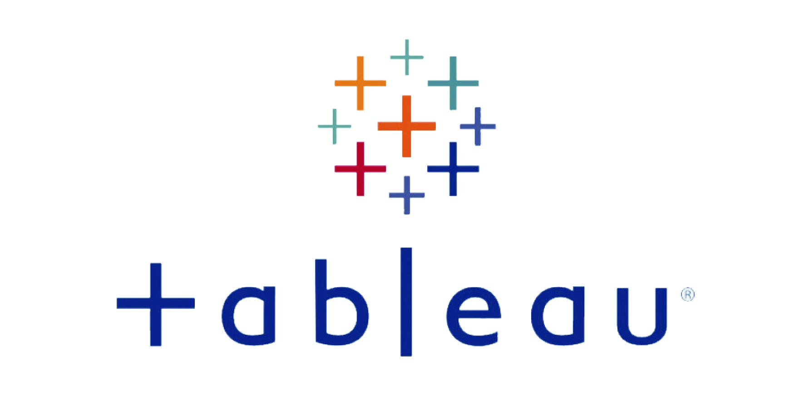
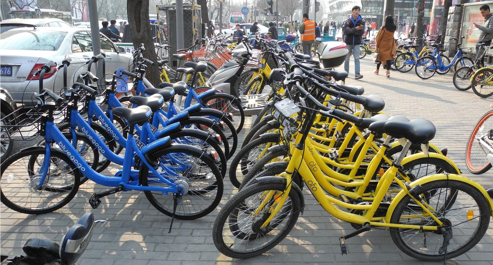

In this project I focus on identifying the regular customers to provide offers,
analyze the busiest route which helps to increase the number
of aircraft required and prepare an analysis to determine the ticket sales details.
This will ensure that the company improves its operability and becomes more customer-centric
and a favorable choice for air travel.

In this project I analyze the employee database, their performance,
and extract specific data based on different requirements.
In this project I provide data insights on the Superstore sample which helps to get a better understanding of customer behavior by analyzing the historical sales data from 2014 to 2017.

Here I present several Tableau Dashboards with Sales and Profit Analysis.

In this project, I performed EDA on bike rentals in R Studio, analyzing daily rentals and their correlation with environmental and seasonal factors.
I developed a predictive model using the random forest algorithm to forecast bike rental counts and evaluated its accuracy on the test dataset.
I performed EDA in R Studio on airport arrival performance, analyzing the impact of weather conditions and events on flight delays.
Utilizing visualizations with the descriptr and ggplot2 packages, I gained insights into these factors` influence.